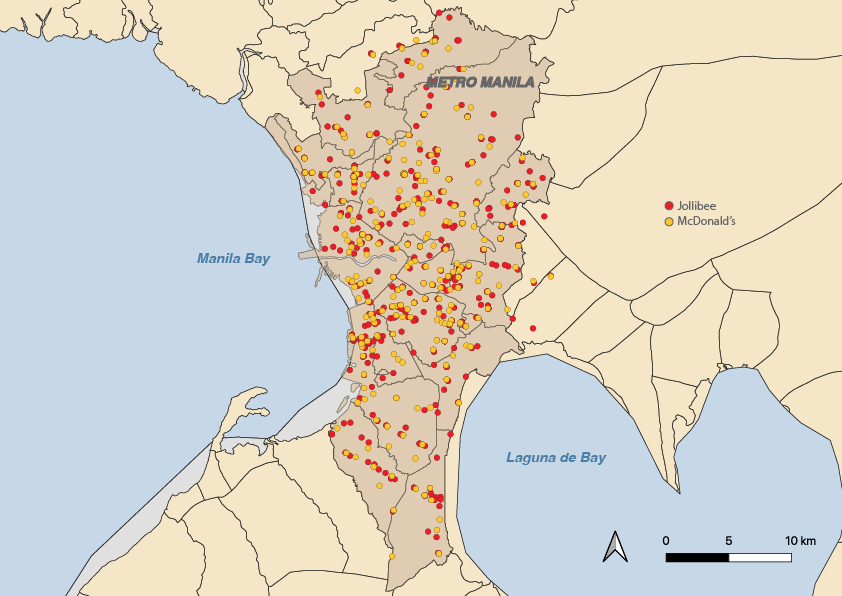

How Jollibee and McDonald's Keep Opening Side by Side in Metro Manila
At the Venice Grand Canal Mall in Taguig, customers deciding between Jollibee and McDonald's — the Philippines' biggest fast food rivals — don't have to walk far. The two restaurants are just 10.7 meters apart.
This is not an isolated case.
Despite competing for many of the same customers, the two repeatedly choose the same commercial areas. Data from the Google Maps Places API shows that Metro Manila's two most ubiquitous fast-food chains frequently become neighbors.

In Metro Manila, competition between Jollibee and McDonald's is not just about menus or marketing. It's also about location — and sometimes, cornering the competition means opening right next door.